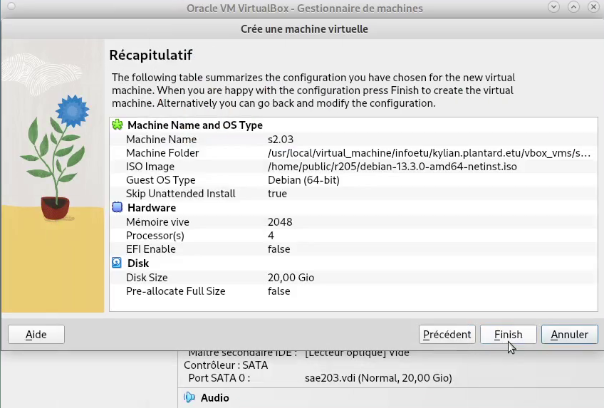
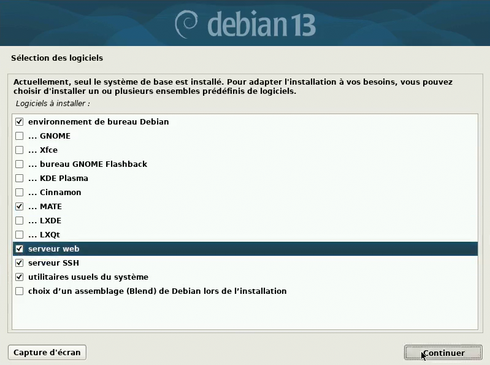
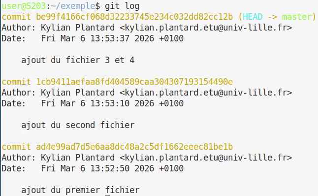
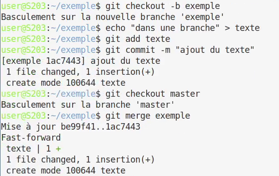
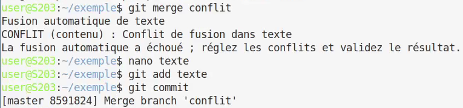
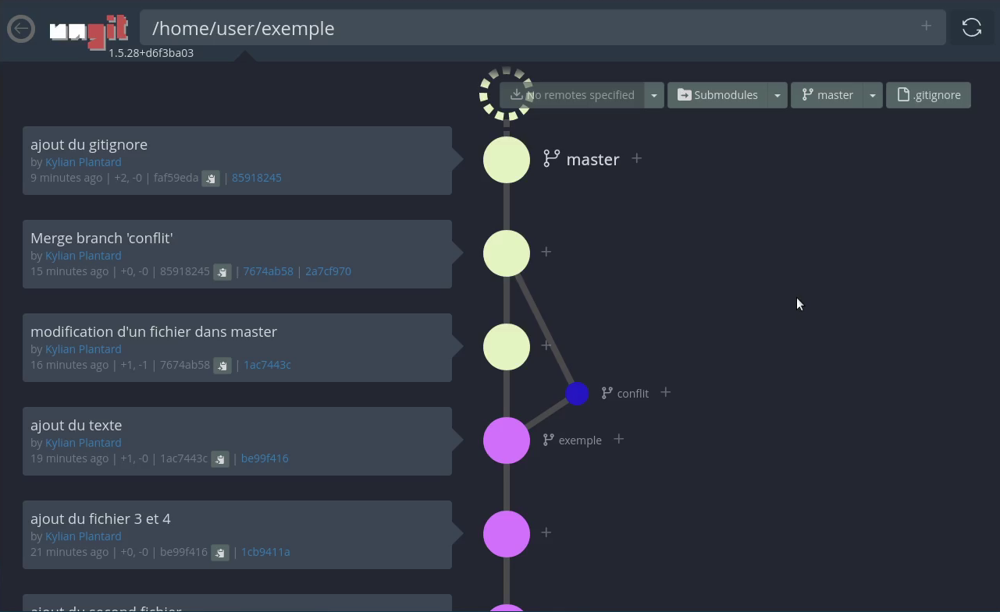

1. Semaine 7 : Préparation de la machine virtuelle et OS de base
Auteurs : Lefebvre Romain, Plantard Kylian, Belot Emilien
|
Présentation Ce rapport retrace l’installation, la configuration et l’automatisation d’une machine virtuelle sous Debian 13, ainsi que les réponses aux questions techniques associées. |
2. Préparation de la machine virtuelle
2.1. Création et caractéristiques de la VM
Nous avons mis en place une machine virtuelle dans VirtualBox en respectant les spécifications suivantes :
-
Nom de la machine :
s2.03 -
Type de système : Linux
-
Version : Debian (64-bit)
-
Mémoire vive (RAM) : 2048 Mo
-
Disque dur : 20 Go (une seule partition de la taille totale)

2.2. Installation de l’OS de base
Lors de l’installation du système d’exploitation à partir de l’image ISO, nous avons appliqué les paramètres suivants :
-
Nom de la machine :
serveur -
Miroir réseau :
http://debian.polytech-lille.fr -
Comptes créés :
-
Administrateur :
root -
Utilisateur standard :
user
-
-
Sélection des logiciels :
-
Environnement de bureau Debian
-
MATE
-
Serveur web
-
Serveur SSH
-
Utilitaires usuels du système
-

2.3. Préparation du système et Suppléments invités
Afin de faciliter l’administration du système, nous avons accordé les droits sudo à l’utilisateur user via la console tty1 (Ctrl+Alt+F1) en étant connecté en tant que root :
usermod -aG sudo userman 8 usermod [1]
Nous avons ensuite inséré le CD virtuel des Additions Invité (Guest Additions) depuis le menu de VirtualBox, puis nous l’avons monté et installé en ligne de commande :
sudo mount /dev/cdrom /mnt
sudo /mnt/VBoxLinuxAdditions.runman 8 mount [2]
Un redémarrage a permis d’activer le redimensionnement dynamique de la fenêtre.
3. Réponses aux questions techniques (Semaine 07)
3.1. Configuration matérielle dans VirtualBox (Question 1)
| Question | Réponse justifiée |
|---|---|
Que signifie "64-bit" ? |
Cela désigne l’architecture du processeur capable de traiter des données par blocs de 64 bits [3]. C’est l’architecture la plus courante pour les systèmes modernes. |
Configuration réseau par défaut ? |
Par défaut, VirtualBox émule un adaptateur réseau ethernet |
Pourquoi 2048 Mo de RAM ? Et avec 512 Mo ? |
2048 Mo permettent de faire tourner confortablement l’installation ainsi que l’environnement graphique MATE. |
Mode réseau par défaut ? |
Le mode NAT. Il isole la VM tout en lui donnant accès à Internet via la connexion de la machine hôte. |
Adresse IP de la VM ? |
|
Adresse de la passerelle ? |
|
3.2. Installation OS de base (Question 2)
| Question | Réponse justifiée |
|---|---|
Fichier iso bootable ? |
C’est une image disque (une copie exacte d’un CD/DVD) contenant les fichiers nécessaires pour amorcer (booter) un ordinateur et installer un système d’exploitation. |
Ce sont des Environnements de Bureau (Desktop Environments) pour Linux. Ils fournissent l’interface graphique (fenêtres, icônes, barres des tâches). GNOME est plus lourd et moderne, MATE est un dérivé plus léger. |
|
Serveur mandataire (proxy) ? |
C’est un serveur qui agit comme intermédiaire entre les requêtes d’un client (notre VM) et un autre serveur (Internet). Il peut filtrer, mettre en cache ou sécuriser les connexions. |
Serveur web ? |
Un logiciel (comme Apache ou Nginx) qui répond aux requêtes HTTP/HTTPS pour distribuer des pages web à des clients (navigateurs). |
Serveur SSH installé ? |
Le paquet installé est |
Test de connexion SSH ? |
Commande : |
3.3. Sudo et Suppléments invités (Questions 3 & 4)
-
Appartenance aux groupes : Pour savoir à quels groupes appartient l’utilisateur
user, on utilise la commandegroups user[6] ouid user[7]. -
Différence entre
suetsudo:-
su[8] (substitute user) permet de changer d’utilisateur (souvent pour devenirroot) et requiert le mot de passe de l’utilisateur cible. -
sudo[9] (substitute user do) permet d’exécuter une seule commande avec les privilèges d’un autre utilisateur (généralementroot), mais nécessite le mot de passe de l’utilisateur courant.
-
-
Version du noyau Linux :
uname -r[10] :6.12.73+deb13-amd64 -
Utilité des suppléments invités : Ils optimisent la VM. Deux raisons de les installer :
-
Permettre le redimensionnement dynamique de la fenêtre (ajustement automatique de la résolution).
-
Activer le presse-papiers partagé entre la machine hôte et la VM.
-
-
Commande
mount: En général, elle sert à attacher un système de fichiers (disque, clé USB) à l’arborescence du système (point de montage). Dans notre cas, elle a servi à rendre accessible le contenu du lecteur CD-ROM virtuel pour y exécuter le script d’installation.
4. À propos de la distribution Debian (Question 4.2)
Pour répondre à ces questions, nous avons consulté la documentation officielle de Debian.
-
Le Projet Debian et son nom : C’est une association d’individus qui ont pour cause commune de créer un système d’exploitation libre. Le nom "Debian" a été imaginé par son créateur, Ian Murdock, en combinant le prénom de sa petite amie de l’époque (Debra) et le sien (Ian).
What is the Debian Project? -
Durées de prise en charge :
-
Minimale (Standard) : Environ 3 ans (1 an après la sortie de la version stable suivante).
-
LTS (Long Term Support) : 5 ans au total. Debian LTS
-
ELTS (Extended LTS) : Jusqu’à 10 ans (géré par une organisation tierce, Freexian). Debian ELTS
-
-
Mises à jour de sécurité : L’équipe de sécurité Debian fournit un support pour la version stable pendant environ 1 an après la sortie d’une nouvelle version stable. Debian Release Lifecycle
-
Versions activement maintenues : Il y en a au minimum 3. Leurs noms génériques sont : Stable, Testing (en test), et Unstable (instable, surnommée Sid). On peut aussi compter Oldstable. Debian Release Lifecycle
-
Origine des noms de code : Tous les noms de code des versions Debian proviennent des personnages des films d’animation Toy Story (ex. : Bullseye, Bookworm, Trixie). Toy Story - Debian Wiki
-
Architectures de Trixie (Debian 13) : La version Trixie de Debian supporte: amd64, aarch64, armhf, powerpc, riscv64 et system z. Debian Trixie Release Information
-
Premier nom de code :
Buzz(Debian 1.1), annoncé le 17 juin 1996. Debian Releases -
Dernier nom de code annoncé : La version 14 est
Forkyet la version 15 seraDuke. Annonce de Forky - Debian Mailing List
5. Installation préconfigurée (Question 5)
|
Attention |
5.1. Ajustement de la pré-configuration
| Question | Réponse |
|---|---|
Différence |
|
Sécurité du preseed |
Oui, le fichier preseed contient les mots de passe de |
5.2. Notre configuration automatisée
Pour répondre aux consignes de l’installation automatisée, nous avons édité le fichier preseed-fr.cfg. Voici les modifications clés apportées :
Installation de MATE :
d-i tasksel/first multiselect standard, mate-desktopAjout des paquets supplémentaires :
d-i pkgsel/include string sudo git sqlite3 curl bash-completion fastfetchAjout de l’utilisateur user dans root :
Nous avons modifié le paramètre par défaut des groupe du nouvel utilisateur pour y rajouter sudo :
-d-i passwd/user-default-groups string audio cdrom video
+d-i passwd/user-default-groups string audio cdrom video sudo6. Semaine 8 : Découverte du format AsciiDoc (.adoc)
Auteurs : Lefebvre Romain, Plantard Kylian, Belot Emilien
7. Introduction et Formatage de base
Bienvenue dans le rapport de la semaine 8. AsciiDoc permet de faire des mises en forme très pratiques pour des rapports techniques.
Voici les formatages de texte de base :
Un texte peut être mis en gras pour insister sur un mot.
On peut utiliser l'italique pour du vocabulaire spécifique ou des termes en anglais.
Pour indiquer une commande dans un texte, on utilise le format monospace (ex: utiliser la commande ls -la).
On peut également surligner en jaune un passage important.
Afficher des touches du clavier grâce à l’attribut experimental : Ctrl+C ou Entrée.
8. Exemples de Listes
8.1. Listes à puces (Non ordonnées)
Voici une liste classique avec différents niveaux d’indentation : * Premier élément principal * Deuxième élément en gras * Troisième élément en italique Une sous-liste de niveau 2 (remarquez les deux étoiles) * Une sous-sous-liste de niveau 3 avec des emojis 🚀 ✅ 🐧 ** Retour au niveau 2
8.2. Listes numérotées (Ordonnées)
Pour décrire une procédure étape par étape :
. Étape 1 : Mettre à jour les paquets (apt update).
. Étape 2 : Installer le service.
.. Sous-étape A : configurer le fichier X.
.. Sous-étape B : redémarrer le service.
. Étape 3 : Vérifier que le service fonctionne.
8.3. Liste de tâches (Checklist)
-
Tâche terminée (ou
[x]) -
Tâche à faire
-
Autre tâche à faire
9. Blocs d’informations (Admonitions)
Les admonitions sont parfaites pour attirer l’attention du correcteur ou du lecteur sur un élément clé :
|
Note d’information |
|
Attention ! |
|
Astuce |
10. Insertion de Blocs de Code
AsciiDoc permet d’insérer du code avec une coloration syntaxique adaptée au langage :
#!/bin/bash
# Mise à jour du système
echo "Mise à jour en cours..."
sudo apt update && sudo apt upgrade -y[server]
DOMAIN = localhost
HTTP_PORT = 300011. Les Tableaux
Créer des tableaux est très simple pour comparer des éléments ou lister des configurations :
| Commande | Explication | Exemple d’utilisation |
|---|---|---|
|
Permet de voir l’état d’un service. |
|
|
Affiche les adresses IP des interfaces réseau. |
|
|
Éditeur de texte en ligne de commande. |
|
12. Images et Liens
12.1. Ajouter des images
Pour illustrer vos propos avec des captures d’écran (le paramètre pdfwidth permet de s’assurer que l’image ne dépasse pas de la page en PDF) :
12.2. Liens et références croisées
-
Lien externe : Il est important de citer vos sources. Voici la Documentation officielle d’Asciidoctor.
-
Lien avec texte personnalisé : Visiter le site de Debian
-
Référence interne (ancre) : Si vous voulez renvoyer le lecteur vers le début du document, vous pouvez créer un lien vers la section Introduction.
13. Conclusion et citations
Pour finir, vous pouvez inclure une citation technique si cela s’y prête :
Talk is cheap. Show me the code. (Parler ne coûte rien. Montrez-moi le code.)
Créateur de Linux
14. Semaine 10 : Étude des applications clientes (Git)
Auteurs : Lefebvre Romain, Plantard Kylian, Belot Emilien
14.1. Configuration globale de Git
La commande git config --global [11] permet de définir des variables globales pour l’ordinateur, qui seront utilisées lors de vos commits (comme votre nom ou votre e-mail).
Elles ne sont évidemment à faire qu’une fois par machine, et pas à chaque projet. Si l’email est différent que celui du compte, les commits ne seront pas associés au profil.
14.2. Concepts de base (Question 1)
| Question | Réponse justifiée |
|---|---|
Différence entre Git et les logiciels comme GitHub/GitLab/Forgejo ? |
Git est l’outil de contrôle de version local en ligne de commande, alors que GitHub/GitLab/Forgejo sont des forges logicielles collaboratives (des plateformes web) permettant d’héberger et de gérer les dépôts Git en ligne. |
Qu’est-ce qu’un dépôt Git ? Où sont stockées les données d’un dépôt local ? |
Un dépôt Git, souvent appelé « repo », est un emplacement de stockage pour les fichiers d’un projet et l’ensemble de l’historique de leurs modifications. Ces données sont stockées de façon masquée dans le dossier local |
Différence entre un commit, une branche et un tag ? |
Un commit est un instantané contenant les différences de chaque fichier par rapport au commit précédent. |
Qu’est-ce qu’un dépôt distant (remote) ? Comment lister les remotes configurés ? |
Un dépôt distant est un dépôt accessible par le réseau (via Internet ou un réseau local d’entreprise). |
Différence entre git pull et git fetch ? |
|
14.3. Protocoles réseau pour Git (Question 2)
| Question | Réponse justifiée |
|---|---|
Quels sont les protocoles supportés par Git pour accéder à un dépôt ? |
12. Le mode intelligent est un serveur http qui comprend l’authentification et les push, tandis que le mode idiot est juste un serveur http basique qui distribue le dossier
.git.
|
Sur quels ports réseau fonctionnent ces protocoles ? |
Le protocole Git fonctionne sur le port |
Comment configurer l’authentification SSH pour Git ? |
Il faut générer une paire de clés SSH sur l’ordinateur avec la commande |
14.4. Manipulation pratique de Git (Question 3)
| Question | Réponse justifiée / Commandes |
|---|---|
Créez un nouveau dépôt Git local. Quelle commande utilisez-vous ? Que se passe-t-il ? |
La commande |
Ajoutez plusieurs fichiers, faites au moins 3 commits. Utilisez git log pour visualiser l’historique. |
 Le résultat est une liste des commits du plus récent au plus ancien avec leurs identifiants (be99f4166…), l’auteur, la date et le message de commit. |
Créez une nouvelle branche, faites des modifications, puis fusionnez (merge) cette branche avec la principale. Expliquez. |
 Une branche est une chaine de commits parallèle aux autres branches (ici |
Qu’est-ce qu’un conflit de fusion ? Provoquez-en un et montrez comment le résoudre. |
 Un conflit survient lorsque deux branches modifient le même fichier de façon différente. |
Utilisez git diff pour comparer deux commits. Expliquez la sortie. |
Les premières lignes indiquent les fichiers comparés ( |
Qu’est-ce que le fichier .gitignore ? Créez-en un pour ignorer les fichiers Java (.class, .jar). |
C’est un fichier texte permettant de lister les motifs des fichiers/dossiers qui ne doivent pas être suivis et versionnés par Git. |
14.5. Travail collaboratif (Question 4)
| Question | Réponse justifiée / Commandes |
|---|---|
Création d’un dépôt privé partagé sur GitLab et clonage par chaque membre. |
|
Chaque membre crée une branche, ajoute un fichier, et pousse (push) sa branche. |
|
Fusion de toutes les branches dans la principale. Documentez les éventuels conflits. |
|
Qu’est-ce qu’une pull request (ou merge request) ? À quoi sert-elle ? |
|
Testez la commande git blame. À quoi sert-elle ? |
14.6. Les interfaces graphiques pour git (Question 5)
-
Qu’est-ce que le logiciel gitk ? Comment se lance-t-il ?
[Espace pour répondre] -
Qu’est-ce que le logiciel git-gui ? Comment se lance-t-il ?
[Espace pour répondre]
14.7. Installons autre chose et comparons (Questions 6 & 7)
Choix de l’interface graphique (Question 6)

-
Pourquoi avez-vous choisi ce logiciel ?
[Espace pour répondre] -
Comment l’avez-vous installé ?
[Espace pour répondre] -
Comparaison avec les outils inclus dans Git et la ligne de commande pure :
[Espace pour répondre : fonctionnalités, avantages, inconvénients]
Analyse comparative approfondie (Question 7)
| Opération | En ligne de commande | Avec l’outil graphique choisi |
|---|---|---|
Visualiser l’historique des commits |
||
Créer une nouvelle branche |
||
Comparer deux versions d’un fichier (diff) |

|
|
Résoudre un conflit de fusion |
-
Quelles opérations sont plus rapides en ligne de commande ? Lesquelles sont plus claires avec l’interface graphique ?
[Espace pour répondre] -
Dans un contexte professionnel, quel outil privilégieriez-vous et pourquoi ?
[Espace pour répondre]
15. Semaine 11 : Installation de Forgejo
Auteurs : Lefebvre Romain, Plantard Kylian, Belot Emilien
16. Question 1 : À propos de Forgejo
Question : Qu’est-ce que Forgejo ? Qu’est-ce qu’un fork ? Retracez l’histoire de Forgejo. Qu’est-ce qui différencie sa gouvernance de celle de Gitea ?
Réponse et Explication : * Forgejo : C’est une forge logicielle libre et auto-hébergée, permettant de gérer des dépôts Git, le suivi des bugs (issues), et l’intégration continue. * Fork : En développement logiciel, un "fork" (ou embranchement) consiste à copier le code source d’un logiciel existant pour créer un nouveau projet indépendant, souvent suite à un désaccord technique ou éthique avec l’équipe d’origine. * Histoire : L’histoire commence avec Gogs, une forge très légère écrite en Go. Gogs évoluant trop lentement au goût de certains contributeurs, ils ont forké le projet pour créer Gitea. Plus récemment, l’entreprise derrière Gitea a pris un virage commercial (création d’une entreprise à but lucratif, Gitea Ltd). En réaction, la communauté (notamment via l’association Codeberg) a forké Gitea pour créer Forgejo (qui signifie "forge" en Espéranto). Gogs et Gitea existent toujours. * Gouvernance : La grande différence réside dans le fait que Gitea est désormais contrôlé par une entreprise commerciale, tandis que Forgejo garantit une gouvernance 100% communautaire et à but non lucratif, empêchant toute privatisation du code.
Commandes utiles (pour l’installation évoquée dans le cours) :
# Téléchargement du binaire officiel
wget -O forgejo https://codeberg.org/forgejo/forgejo/releases/download/v1.21.0/forgejo-1.21.0-linux-amd64
chmod +x forgejo17. Question 2 : Architecture et protocoles réseau
Question : Par défaut, Forgejo écoute sur le port 3000. Pourquoi pas le port 80 (port standard HTTP) ?
Réponse et Explication :
Sous Linux, les ports inférieurs à 1024 (appelés ports privilégiés) nécessitent les droits d’administrateur (root) pour pouvoir être ouverts et écoutés.
Faire tourner une application web complexe comme Forgejo avec les droits root est une faille de sécurité majeure (si l’application est compromise, tout le serveur l’est).
Forgejo tourne donc sous un utilisateur standard (souvent nommé git ou forgejo) et utilise un port non privilégié comme le 3000.
En production, on place généralement un "Reverse Proxy" (comme Nginx ou Apache) qui, lui, a les droits d’écouter le port 80 ou 443 et qui redirige le trafic de manière sécurisée vers le port 3000 local.
18. Question 3 : Base de données
Question : Pourquoi SQLite plutôt que PostgreSQL ou MySQL/MariaDB ? Où se trouve le fichier de base de données SQLite ? Qui en est le propriétaire ?
Réponse et Explication :
* Choix de SQLite : SQLite est une base de données orientée fichier, ultra-légère et ne nécessitant aucune configuration de serveur (pas de service supplémentaire à faire tourner ou à sécuriser). C’est parfait pour une SAÉ, un petit groupe ou un usage sur une machine virtuelle ayant peu de RAM (comme nos 2048 Mo).
* Emplacement et Propriétaire : En général, le fichier se trouve dans le répertoire de travail de l’application, souvent dans /var/lib/forgejo/data/forgejo.db. Le propriétaire de ce fichier doit être l’utilisateur système qui exécute le service Forgejo (ex: git ou forgejo), afin qu’il puisse y lire et y écrire les données.
Commandes utiles :
# Vérifier l'emplacement et le propriétaire du fichier SQLite
ls -l /var/lib/forgejo/data/forgejo.db19. Question 4 : Gestion du service systemd
Question : Qu’est-ce qu’un service systemd ? Expliquez le fichier de service. Différence entre start, enable et restart ? Comment visualiser les logs ?
Réponse et Explication :
* Systemd : C’est le gestionnaire de système et de services de Linux. Il permet de démarrer, arrêter et surveiller les processus fonctionnant en arrière-plan (les démons), et de s’assurer qu’ils redémarrent en cas de crash.
* Le fichier de service (/etc/systemd/system/forgejo.service) :
[Unit] : Contient les métadonnées et les dépendances (ex: "ne démarrer ce service qu’après le démarrage du réseau").
[Service] : Définit comment exécuter l’application (l’utilisateur cible User=git, le chemin vers le binaire ExecStart=…, le répertoire de travail, etc.).
[Install] : Définit à quel moment de la séquence de démarrage le service doit être lancé (généralement multi-user.target).
* Commandes systemctl :
start : Lance le service immédiatement.
enable : Configure le service pour qu’il se lance automatiquement au démarrage de la machine.
restart : Arrête puis redémarre le service (utile après un changement de configuration).
Commandes utiles :
# Gérer le service
sudo systemctl enable forgejo
sudo systemctl start forgejo
sudo systemctl restart forgejo
# Visualiser les logs en direct
sudo journalctl -u forgejo -f20. Question 5 : Sécurité
Question : Examinez les permissions de /etc/forgejo et app.ini. Pourquoi sont-elles importantes ? Le serveur SSH écoute sur quel port ? Mesures pour un accès Internet ?
Réponse et Explication :
* Permissions (app.ini) : Le fichier app.ini contient des mots de passe en clair (clés secrètes, mail, configuration interne). Ses permissions doivent être très restrictives (généralement 0640 ou 0600) pour que seul l’utilisateur forgejo (et root) puisse le lire.
* Serveur SSH : Le port 22 standard est déjà utilisé par le serveur SSH de la machine hôte Debian. Forgejo déploie donc son propre serveur SSH interne qui écoute sur un port alternatif (souvent le port 2222).
* Sécurité sur Internet : Si le serveur était exposé, il faudrait impérativement :
. Configurer le HTTPS (certificats SSL/TLS via Let’s Encrypt).
. Activer un pare-feu (ufw) pour ne laisser passer que les ports nécessaires (80, 443, 22, 2222).
. Installer Fail2ban pour bloquer les tentatives d’attaques par force brute.
Commandes utiles :
# Restreindre les permissions
sudo chmod 750 /etc/forgejo
sudo chmod 640 /etc/forgejo/app.ini
sudo chown -R forgejo:forgejo /etc/forgejo21. Question 6 : Tests d’utilisation approfondis
Question : Projet privé vs public ? Ajouter des équipiers, lier une issue à un commit, tester clone/push en SSH.
Réponse et Explication :
* Privé vs Public : Un projet public est lisible (et clonable) par n’importe quel visiteur, même non authentifié. Un projet privé est invisible et inaccessible à moins d’être explicitement invité par le propriétaire.
* Issues et Commits : Forgejo permet de fermer automatiquement un ticket (issue) lors d’un push en utilisant des mots-clés spécifiques dans le message du commit (ex: Fixes #1).
* Clé SSH : Renseigner sa clé publique dans les paramètres Forgejo permet d’authentifier sa machine de manière sécurisée et d’éviter de taper son mot de passe à chaque git push.
Commandes utiles :
# 1. Créer sa clé SSH (si non existante)
ssh-keygen -t ed25519 -C "mon.email@exemple.com"
# 2. Cloner en utilisant le port SSH personnalisé (ex: 2222)
git clone ssh://git@localhost:2222/utilisateur/projet.git
# 3. Lier un commit à l'issue numéro 3
git commit -m "Correction du bug d'affichage. Fixes #3"
git push22. Question 7 : Intégration et livraison continues (Pour aller plus loin)
Question : Qu’est-ce que CI/CD ? Workflow simple ? Avantages en équipe ?
Réponse et Explication : * CI (Continuous Integration) : Automatisation des tests et de la vérification du code à chaque fois qu’un développeur pousse (push) des modifications. Cela garantit que le nouveau code ne "casse" pas l’application. * CD (Continuous Delivery/Deployment) : Déploiement automatisé de l’application (ex: création du rapport PDF Asciidoc ou publication du site web) une fois les tests de la CI validés. * Avantages : Réduction massive des bugs, retours immédiats pour les développeurs, standardisation de la compilation (plus de "ça marche sur ma machine mais pas sur le serveur"), et gain de temps sur les tâches répétitives.
Exemple d’un fichier Workflow Forgejo Actions (.forgejo/workflows/build.yml) :
name: Compilation AsciiDoc
on: [push]
jobs:
build:
runs-on: ubuntu-latest
steps:
- name: Récupération du code
uses: actions/checkout@v3
- name: Installation Asciidoctor
run: sudo apt-get install -y asciidoctor
- name: Compilation HTML
run: asciidoctor rapport.adoc